The full sla_REFRO refraction calculation is onerous, and for zenith distances of less than, say, 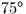 the following model can be used instead:
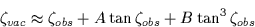
where 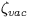 is the topocentric zenith distance (i.e. in vacuo), 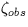 is the observed zenith distance (i.e. affected by refraction), and A and B are constants, about 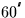and 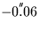 respectively for a sea-level site. The two constants can be calculated for a given set of conditions by calling either sla_REFCO or sla_REFCOQ.sla_REFCO works by calling sla_REFRO for two zenith distances and fitting A and B to match. The calculation is onerous, but delivers accurate results whatever the conditions. sla_REFCOQ uses a direct formulation of A and B and is much faster; it is slightly less accurate than sla_REFCO but more than adequate for most practical purposes.
Like the full refraction model, the two-term formulation works in the wrong
direction for our purposes, predicting
the in vacuo (topocentric) zenith distance
given the refracted (observed) zenith distance,
rather than vice versa. The obvious approach of
interchanging and and
reversing the signs, though approximately
correct, gives avoidable errors which are just significant in
some applications; for
example about
 at 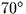 zenith distance. A
much better result can easily be obtained, by using one Newton-Raphson
iteration as follows:
at 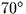 zenith distance. A
much better result can easily be obtained, by using one Newton-Raphson
iteration as follows:
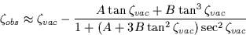
The effect of refraction can be applied to an unrefracted
zenith distance by calling
sla_REFZ or to an unrefracted
 by calling
sla_REFV.
Over most of the sky these two routines deliver almost identical
results, but beyond 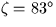sla_REFV
becomes unacceptably inaccurate while
sla_REFZ
remains usable. (However
sla_REFV
is significantly faster, which may be important in some applications.)
SLALIB also provides a routine for computing the airmass, the function
sla_AIRMAS.
by calling
sla_REFV.
Over most of the sky these two routines deliver almost identical
results, but beyond 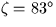sla_REFV
becomes unacceptably inaccurate while
sla_REFZ
remains usable. (However
sla_REFV
is significantly faster, which may be important in some applications.)
SLALIB also provides a routine for computing the airmass, the function
sla_AIRMAS.
The refraction ``constants'' returned by sla_REFCO and sla_REFCOQ are slightly affected by colour, especially at the blue end of the spectrum. Where values for more than one wavelength are needed, rather than calling sla_REFCO several times it is more efficient to call sla_REFCO just once, for a selected ``base'' wavelength, and then to call sla_ATMDSP once for each wavelength of interest.
All the SLALIB refraction routines work for radio wavelengths as well as the optical/IR band. The radio refraction is very dependent on humidity, and an accurate value must be supplied. There is no wavelength dependence, however. The choice of optical/IR or radio is made by specifying a wavelength greater than 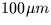for the radio case.
SLALIB --- Positional Astronomy Library